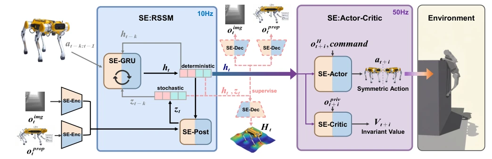
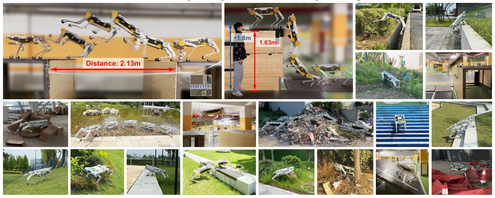
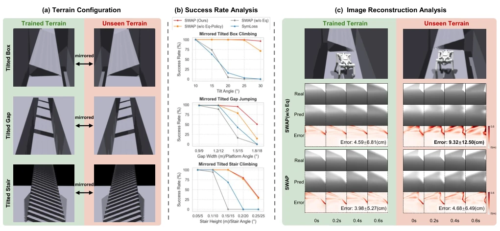
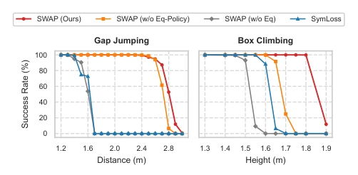
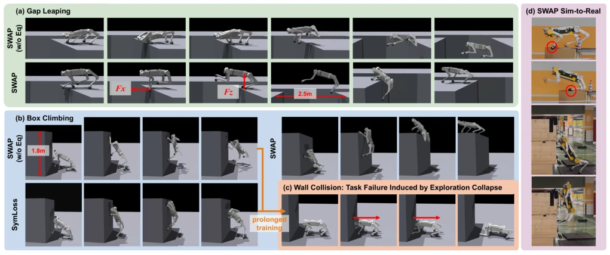

This paper proposes a "symmetry OCD" treatment for quadruped robots. Existing latent world models (WM) rely too heavily on data-driven approaches, encoding left-right symmetric physical interactions as independent modes, which not only wastes computational power but also fails to learn geometric patterns, limiting latent space efficiency. SWAP directly hard-codes symmetry into the network architecture, enabling the latent space to understand "mirroring" while constraining the policy network. The results are indeed impressive; the Apollo robot jumped 2.13 meters and climbed 1.63 meters, breaking the quadruped robot parkour record. However, will this strong constraint be too rigid under complex asymmetric terrain? After all, the real world is not perfectly mirror-symmetric, and the paper does not deeply evaluate discrete landing point scenarios. But overall, embedding physical priors into RL is a good path, at least smarter than relying purely on data volume, providing new structural prior ideas for extreme motion control.
Quadruped robot motion essentially possesses bilateral symmetry, and physical laws remain invariant under mirror transformation. However, existing latent world models (such as RSSM [3], Dreamer [4], DayDreamer [5], WMP [6]) mostly adopt pure data-driven approaches, encoding left-right symmetric physical interactions as independent modes. This not only increases the learning burden but also causes the model to struggle to capture geometric patterns from limited samples, limiting the efficiency of latent space utilization for downstream policies. In extreme agile sports, the feasible trajectory subset is very small, and redundant encoding hinders efficient exploration. Therefore, a structured method that explicitly utilizes symmetry priors is needed to avoid policies falling into asymmetric suboptimal traps.
SWAP is an end-to-end framework containing a symmetry-equivariant world model and a symmetry-equivariant Actor-Critic policy. The overall process is: the low-frequency world model learns geometric perceptual latent representations from multimodal inputs, the high-frequency Actor generates actions based on latent states and proprioception, and the Critic provides value estimation. The innovations lie in: 1. SE-RSSM: The latent state dimensions of RSSM are designed to be even, alternating left-right symmetric features, defining odd-even permutation operators, ensuring the encoder, GRU, prior/posterior networks, and decoder all satisfy equivariance. 2. Actor-Critic Decoupling: Actor uses SE-MLP to ensure symmetric flipping of action output, Critic output is constrained to trivial representation (Invariant), ensuring value estimation consistency under mirror states. 3. Training: AMP is used as a symmetry-equivariant discriminator for style regularization, combined with curriculum learning to gradually increase terrain difficulty. Additionally, the model adopts a low-frequency update scheme to save computational costs, and accelerates convergence through height map auxiliary decoding. This architecture design ensures physical symmetry consistency of state perception, time evolution, and action output, effectively reducing encoding redundancy.

Fig. 2. Overview of the SWAP framework. The architecture consists of a low-frequency Symmetric Equivariant World Model (blue) and a high-frequency Symmetric Equivariant Actor-Critic policy (purple). Image encoders and decoders use symmetric equivariant CNNs; all other networks use symmetric equivariant MLPs.
实验Experiments
在 Isaac Gym 中训练，6000 并行环境，10 小时收敛。仿真对比了四种配置：完整 SWAP、无等变策略、无等变约束、SymLoss 损失惩罚。实验包括对称地形迁移（训练左高右低，测试镜像）和极限跑酷（跳坑、爬箱）。结果显示，SWAP 在镜像地形上成功率显著高于基线，重构误差更稳定。极限任务中，SWAP 跳坑成功率最高，且能保持对称接触，而基线易陷入单腿依赖或碰撞墙壁。真实世界部署在 Apollo 机器人上，零迁移至室内外环境，实现 2.13 米跳坑和 1.63 米爬箱，刷新四足机器人记录。此外，在户外复杂场景中，如湿滑岩石、反光水面及松散杂物，模型仍保持鲁棒性，验证了零样本迁移能力。
Trained in Isaac Gym, 6000 parallel environments, 10 hours convergence. Simulation compared four configurations: full SWAP, no equivariant policy, no equivariant constraint, SymLoss loss penalty. Experiments include symmetric terrain transfer (train left-high right-low, test mirror) and extreme parkour (jump pits, climb boxes). Results show that SWAP has a significantly higher success rate on mirror terrain than baselines, with more stable reconstruction error. In extreme tasks, SWAP has the highest pit jump success rate and can maintain symmetric contact, while baselines are prone to single-leg dependency or wall collision. Real-world deployment on the Apollo robot, zero-shot transfer to indoor and outdoor environments, achieving 2.13 meter pit jumps and 1.63 meter box climbs, refreshing quadruped robot records. Additionally, in outdoor complex scenes, such as wet rocks, reflective water surfaces, and loose debris, the model remains robust, validating zero-shot transfer capability.

Fig. 1. Our SWAP framework enables the Apollo quadruped robot to perform highly dynamic locomotion on challenging terrains. The trained policy transfers zero-shot from simulation to multiple indoor and outdoor real-world environments, demonstrating robust athletic performance in diverse scenarios.

Fig. 3. Analysis of symmetric terrain transfer. (a) Evaluation setup: Policies are trained exclusively on unilaterally tilted terrains and evaluated directly on their mirrored counterparts without any fine-tuning. (b) Success rates on unseen mirrored terrains: SWAP and SWAP (w/o Eq-Policy) consistently maintain high success rates across varying difficulty levels. (c) Image reconstruction loss analysis: When transferred to mirrored terrains, the reconstruction error of SWAP (w/o Eq) increases sharply, whereas that of SWAP increases minimally.

Fig. 4. Performance comparison on extreme parkour tasks. Left: Success rates for gap leaping. Right: Success rates for box climbing.

Fig. 5. Visual comparison of motion strategies. (a) Gap leaping: SWAP generates powerful forward and upward impulses. (b) Box climbing: SWAP maintains symmetric bilateral contact. (c) Exploration failure: SWAP (w/o Eq) and SymLoss ultimately suffer from exploration collapse. (d) Real-world keyframes: the robot reproduces simulated motion strategies.